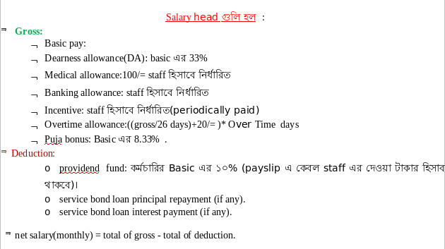
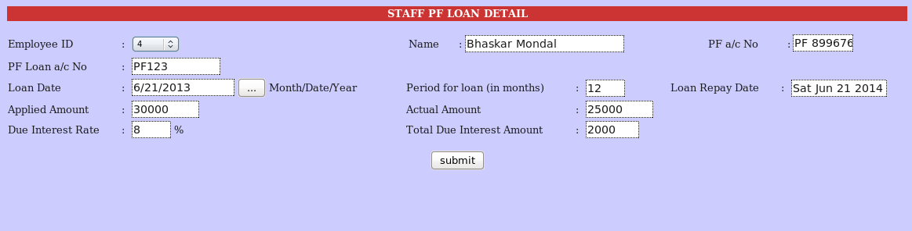

Introduction
figure 1 : Introduction
Steps to follow for monitoring - PAYROLL System:
1. At First login into Netware Common Accounting System
2. Go to Setup node for setting up salary parameters and professional slab details
3. Go to Salary module
4. From Main menu click on Add New Employee button to add a new staff in payroll system
Total Employee Information at a glance
 figure 2 : Main Menu
figure 2 : Main Menu
If you are an Existing Customer Input your customer ID..and click go
5. Input all information about an employee and then click Add button to save information
Employee Master Creation – Addd new employee
The Above mentioned * fields must be supplied to create employee
figure 3:Add Employee
To update employee information you have to click Edit shown in figure 2.
6. From main menu list you can select edit operation to change information of existing employee
figure 4 : Edit Employee Information
7. select PF Acc No option from main menu to give details of Provident fund a/c
figure 5: Employee PF Detail
8. select Basic Pay option from main menu to give salary details like basic pay and effective date from when basic pay is effected
Employee Salary Details Creation –
basic input is :
| basic salary and effective date |
| by default current date is appeared but salary details is saved against 1st day of the month |
| Based on basic, HRA DA is calculated according to parameter given |
| (like 15% hra on basic and 80% da on basic) |
| Medical Allowance is Rs.150/= fixed amount |
| Prof Tax is calculated according to slab |
| Basic 3001- 5000, ptax 30, |
| 5001-6000, ptax 40, |
| 6001-7000, ptax 45, |
| 7001-8000, ptax 50, |
| 8001-9000, ptax 90, |
| 9001-15000 ptax 110, |
| 15001-above, ptax 130 |
| provident fund is calculated- for employer's contribution |
| (basic+da)*12% |
| provident fund is calculated- for employee's contribution |
| (basic+da)*12% |
figure 6: Employee Salary Detail
Employee salary creation and have a look
9. create holiday master as well as monthly work off days
figure 7: Holiday Master
10. give input for attendance details for an employee for a particular year month
figure 8: Attendence Details
11. give input for leave details for an employee for a particular year month
figure 9: Leave Master
12. for Staff Loan- input staff loan a/c no into employee's master screen in edit mode
13. for PF Loan – click onto Provident Fund option in main node, then choose PF Loan Header for granting Loan and for repayment PF Loan Details option

figure 10: PF Header
firstly select your employee Id and year and month for PF repayment
figure 11: PF Detail (1)
figure 12: PF Detail (2)
Employee Salary Register Processing for a particular year and month for all employee
Open this screen from image 1 (process salary button)and process salary for desired month
Pay Slip is generated for an employee after selecting year and month
You can get payslip for each month and print as well dirrect from this screen (image 1) by clicking pay slip